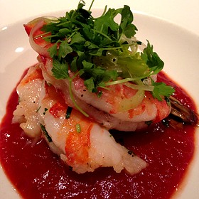
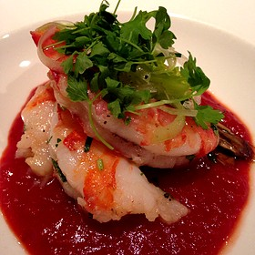

Best in map area

A Chicago-style hot dog, Chicago Dog, or Chicago Red Hot is an all-beef frankfurter[1][3] on a poppy seed bun,[4] originating from the city of Chicago, Illinois. The hot dog is topped with yellow mustard; chopped white onions; bright green sweet pickle relish; a dill pickle spear; tomato slices or wedges; pickled sport peppers; and a dash of celery salt.[1][5][6][7] The complete assembly of a Chicago hot dog is said to be "dragged through the garden" due to the many toppings.[8][9] The method for cooking the hot dog itself varies depending on the respective vendor's preference. Most often they are steamed, water-simmered or grilled over charcoal, the latter of which are referred to as "char-dogs."
The canonical recipe[1] does not include ketchup, and there is a widely-shared, strong opinion among many Chicagoans and aficionados that ketchup is unacceptable. [10][11][12][13] A number of Chicago hot dog vendors do not offer ketchup as a condiment.[14]


 
